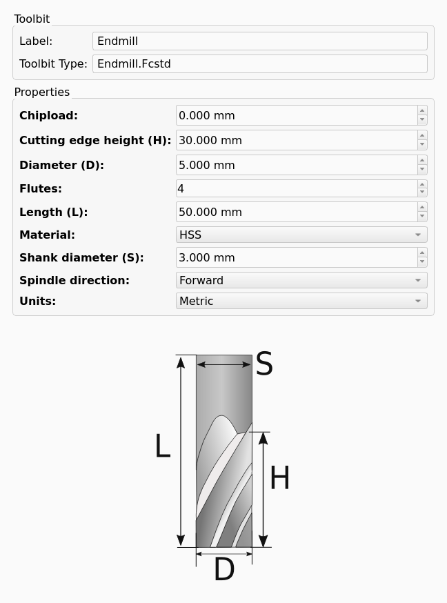
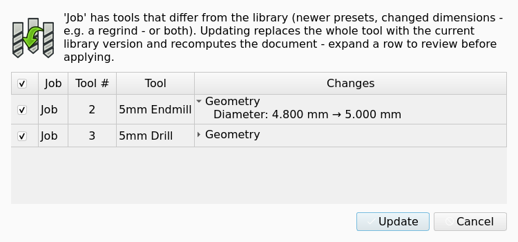

CAM ToolBit
Description
Toolbits are the foundation of the CAM Tools system. They represent a specific tool that can be used in a CAM Job to generate a Toolpath. Each Tool Bit is stored as a JSON file. JSON is structured data that can be easily parsed by macros or python scripts but remains human readable. Describing Tool Bits with JSON allows for the possibility of automatically creating large collections of accurate Tool Bits with a script.
Storing a tool as a JSON file sounds great but eliminates the option of an accurate thumbnail or solid body representation. On the other hand, if each Tool Bit were created as a FreeCAD object, obtaining the solid body would be simple but would require enormous storage for large tool collections. Also automatically creating Tool Bits as FreeCAD objects would be difficult or impossible.
Instead, the Tool Bit is a hybrid. The JSON file names the Tool Shape by its ID (for example endmill.fcstd, looked up in the Tools/Shape folder of the asset directory or the shipped shapes) and stores the values of the shape parameters and attributes.
When a Tool Bit is added to a Job, the Tool Shape body is copied into the document (hidden, property BitBody) and its solid is assigned to the Tool Bit object. Changing a parameter in the Shape group of the Tool Bit updates the solid after the next recompute. This provides the correct shape and dimensions which can be used to generate a point cloud or mesh for advanced algorithms (and potentially simulation).
Usage
Within the FreeCAD GUI the Library Manager provides a mechanism to create a new Tool Bit. A single Tool Bit can exist in multiple Tool Libraries.
Select .
Select a library (or All Toolbits).
Press the Adds a toolbit button and pick a Tool Shape in the Toolbit Shape Selection dialog.
In the Toolbit Parameter Editor set the Label, Tool Number (only when a library is selected; the next free number is proposed), the Toolbit Type (editable only for shapes with subtypes, for example Drill: jobber, stub, spot, center, brad point), the shape parameters and the attributes, then press OK.
To edit an existing Tool Bit, double-click it in the Library Manager. As an alternative, select it in the Library Manager or in the Toolbit Selector
Selector, or select itand press F2.
To edit a Tool Bit that is in a document, see Tool Bits in a document.
Toolbit Parameter Editor
The ToolBit The editor (window title Toolbit Parameter Editor) has two tabs:
-
Toolbit: Label, Toolbit Type, optional Tool Number, a Properties list (Shape and Attributes groups) with the abbreviations used in the shape drawing shown next to each parameter, and the shape drawing.
-
Feeds && Speeds introduced in 26.3: a table of the presets stored on the Tool Bit with Add preset, Edit, Copy and Delete buttons; see CAM FeedsSpeeds.
The figure shows the Toolbit tab for the Tool Bit 5mm Endmill.

A Notes tab exists in the dialog definition but is hidden.
While the Toolbit Parameter Editor is open, the FreeCAD unit schema is temporarily switched to the Tool Bit’s Units setting so that parameters are entered in the tool’s native units; the previous schema is restored when the editor closes.
The Properties list does not show a calculated parameter, for example the Diameter of the Chamfer Tool Shape; see Tool Shape.
When the ToolBit editor loads a Tool Bit, the ToolBit editor sets the unit schema of FreeCAD to the Units of the Tool Bit. The ToolBit editor sets the initial unit schema again when it closes.
The quantity fields of the ToolBit editor show tool precision: 3 decimals when Units is Metric and 4 decimals when Units is Imperial. The Units Decimals preference does not change the number of decimals in these fields. When you change Units in the Toolbit Parameter Editor dialog, the dialog builds the property fields again in the new units.
Properties
-
ShapeID (
String, read-only): ID of the Tool Shape (.fcstd). -
ShapeType (
Enumeration, read-only): the shape class (Endmill, Ballend, Bullnose, Chamfer, Drill, VBit, Dovetail, Reamer, SlittingSaw, Tap, ThreadMill, Probe, TaperedBallNose, Radius, Custom). -
ToolBitID (
String, read-only): the unique ID of the Tool Bit (its file name in the library). -
BitBody (
Link, hidden): the parametrized body.
One property per parameter of the Tool Shape, for example Diameter, Length, CuttingEdgeHeight, ShankDiameter, Flutes. See CAM ToolShape for the list per shape.
Units (
Enumeration: Metric, Imperial) introduced in 26.3: measurement units of the Tool Bit. The ToolBit editor shows the quantity parameters in these units and FreeCAD saves them in these units. Default:Metric.unit system used to display the Tool Bit’s parameters.SpindleDirection (
Enumeration: Forward, Reverse, None): default spindle direction; copied to the Tool Controller when the Tool Bit is added to a Job. Probes never rotate.Material (
Enumeration: HSS, Carbide): tool material; used by the Feeds and Speeds helper to pick the matching surface speed of the Stock material.Chipload (
Length, cutting tools only): default chipload per tooth, used as a low-confidence fallback by the Feeds and Speeds helper.
-
Presets (
String, only present once a preset was saved) introduced in 26.3: JSON list of Feeds & Speeds presets.
JSON Structure
introduced in 26.3: a ToolBit can define a Units parameter: Metric or Imperial. The ToolBit editor uses it for native-unit display; CAM calculations still use metric units internally. Changing the unit schema may cause small rounding differences.
introduced in 26.3: the parameter object of a Tool Bit file can have the Units parameter with the value Metric or Imperial. Each Tool Bit file that FreeCAD supplies has the Units parameter. CAM calculations still use metric units internally.
FreeCAD saves each quantity parameter in the Units of the Tool Bit at tool precision: 3 decimals for Metric and 4 decimals for Imperial. The active unit schema and the Units Decimals preference do not change the saved text when Units is Metric or Imperial.
-
FreeCAD saves a
Metriclength from 0.001 mm to less than 0.1 mm with 4 decimals. -
FreeCAD saves an angle with the degree symbol directly after the number, without a space.
When a Tool Bit has no Units value, FreeCAD selects the unit and the number of decimals from the active unit schema. Only the unit schema Imperial decimal (in, lb) gives 4 decimals. All other unit schemas, US customary (in, lb) included, give 3 decimals.
Tool precision applies to the values that FreeCAD saves. A Tool Bit file can have values with a different number of decimals, as the example shows.
The Camotics export does not use the Units property; see Tool Library.
{
"version": 2,
"id": "5mm_Endmill",
"name": "5mm Endmill",
"shape": "endmill.fcstd",
"shape-type": "Endmill",
"parameter": {
"Chipload": "0.0000 mm",
"CuttingEdgeHeight": "30.0000 mm",
"Diameter": "5.0000 mm",
"Flutes": 2,
"Length": "50.0000 mm",
"Material": "HSS",
"ShankDiameter": "3.0000 mm",
"SpindleDirection": "Forward",
"Units": "Metric"
},
"attribute": {},
"presets": [
{
"name": "Aluminium profile",
"material_hint": {"uuid": "…", "name": "Aluminium 6061"},
"op_type_hint": "profile",
"surface_speed": 300.0,
"chipload": 0.05,
"vert_feed_ratio": 0.33,
"notes": null
}
]
}The keys are:
-
version: always 2. -
id: the Tool Bit ID (optional; defaults to the file name). -
name: the label shown in the UI. -
shape: Tool Shape ID plus.fcstd. -
shape-type: the shape class or subtype (for exampleDrillorjobber). -
parameter: shape parameters and attributes as quantity strings. -
attribute: reserved, empty. -
presetsintroduced in 26.3: optional list of Feeds & Speeds presets (surface_speedin m/min,chiploadin mm per tooth).
Unknown top-level keys are preserved when the file is re-saved.
Tool Bits in a document
In a Job the Tool Bit object is shown as a child of its Tool Controller and is hidden by default. The Toolbit Selector makes a new Tool Bit object for each Tool Controller. A copy of a Tool Controller uses the Tool Bit object of the initial Tool Controller.
A Tool Bit placed in a document can be written back to a file from its tree-view context menu: Save Tool (only if the object came from a file) and Save Tool As… open a save dialog offering the FreeCAD Tool (.fctb) and YAML formats. The commands CAM_ToolBitCreate (New Toolbit) and CAM_ToolBitLoad (Load Tool) exist but are not placed in any menu.
Double-click a Tool Bit in the tree view to open the ToolBit editor as a task panel. The task panel shows the Label, the Toolbit Type, the Properties list and the shape drawing of the Tool Bit. The task panel does not have the Feeds && Speeds tab. OK saves the Tool Bit and recomputes the document. Cancel discards all edits that you made in the task panel.
The figure shows the task panel for the Tool Bit of a new Job.

The Transform entry of the tree-view context menu starts the standard Transform manipulator of FreeCAD for the Tool Bit. The Transform entry does not open the ToolBit editor.
The tree-view context menu of a Tool Bit in a document has the entries Save Tool and Save Tool As…. The two entries are not available for a Tool Bit object in a document.
The commands CAM_ToolBitCreate (New Toolbit) and CAM_ToolBitLoad (Load Tool) exist but are not placed in any menu.
Update from library
introduced in 26.3: when a document is opened, embedded Tool Bits are compared with the library Tool Bit that has the same ToolBitID. If presets or Shape-group values differ, the Tool Updates Available dialog lists the differences (expand a row to see old and new values) and replaces checked Tool Bits with the library version. The same check is available from the Job’s context menu entry Update Tools from Library. The automatic check can be turned off in (Check for tool updates from the library when opening a document).
introduced in 26.3: an embedded Tool Bit is the copy of a library Tool Bit that a Job has in the document. A change of the library Tool Bit does not change the embedded Tool Bit. An update from the library replaces a stale embedded Tool Bit with a new copy of its library Tool Bit.
FreeCAD finds the library Tool Bit of an embedded Tool Bit only by the ToolBitID property. An embedded Tool Bit is stale when one of these conditions applies:
-
The Feeds & Speeds presets of the embedded Tool Bit are different from the presets of the library Tool Bit.
-
A property of the Shape group that is on the two Tool Bits has a different value.
FreeCAD does not compare the Shape group when the ShapeType of the two Tool Bits is different. FreeCAD does not compare a property that is on only one of the two Tool Bits. FreeCAD searches for the ToolBitID in your Tool Bits and then in the Tool Bits that FreeCAD supplies. An embedded Tool Bit without a ToolBitID, or with a ToolBitID that FreeCAD does not find, is not examined and is not changed.
FreeCAD examines the embedded Tool Bits at two times:
-
At document load. When a document becomes active for the first time after you open it, FreeCAD examines all Jobs of the document. The check occurs one time for each load of the document, after restore and recompute are complete. The check occurs only when the preference Check for tool updates from the library when opening a document in is set; see CAM Preferences.
-
On request. The entry Update Tools from Library in the tree-view context menu of a Job examines only that Job. The entry operates also when the preference is not set. When the Job has no stale Tool Bit, FreeCAD shows the message "This job has no tool updates available."
When a minimum of one embedded Tool Bit is stale, FreeCAD shows the Tool Updates Available dialog. The table of the dialog has one row for each Tool Controller whose embedded Tool Bit is stale. The table has these columns:
-
Checkbox column: selects the row for the update. Each row is set by default. The checkbox in the table header sets or clears all rows and shows a partial state when only some rows are set.
-
Job: the label of the Job.
-
Tool #: Tool Number of the Tool Controller.
-
Tool: the label of the embedded Tool Bit.
-
Changes: the summary
Presets,GeometryorPresets, Geometry.
When a Tool Bit has geometry changes, you can expand its Changes cell. The expanded cell shows one line Presets if the presets are different. The expanded cell shows one line for each changed property, with the property label, the value in the document and the value in the library. The dialog shows the two values in the Units of the library Tool Bit. The dialog does not show the presets item by item.
The figure shows the dialog with two stale Tool Bits and the Changes cell of the first row expanded.

Update replaces only the Tool Bits of the rows that are set. Update is disabled when no row is set. Cancel changes nothing and is the default button.
An update always replaces the full Tool Bit. FreeCAD attaches a new full copy of the library Tool Bit to the document, with its presets, its Shape group values and its Units. FreeCAD then sets the Tool property of the Tool Controller to the new copy and removes the old Tool Bit object from the document. An update of only the presets or only the geometry is not possible. For the Tool Controller after an update, see Tool Controller.
When two Tool Controllers use one Tool Bit object, the update of one row removes that object. FreeCAD does not set the Tool property of the other Tool Controller to the new copy.
| Do not update an embedded Tool Bit whose local edits are necessary. The update removes the old Tool Bit object with all its local edits: presets, dimensions and other properties. |
FreeCAD does not write a change of the Presets property of an embedded Tool Bit to the library Tool Bit; see Feeds & Speeds presets. Thus an update from the library replaces the changed presets with the presets of the library Tool Bit.
After the update, FreeCAD hides each new Tool Bit in the 3D view and recomputes the document one time. FreeCAD does not replace a Tool Bit whose library Tool Bit was deleted after the check.
Scripting
from Path.Tool.toolbit import ToolBit
tb = ToolBit.from_shape_id("endmill.fcstd", label="6mm Endmill")
tb.set_property("Diameter", "6 mm")
obj = tb.attach_to_doc(App.ActiveDocument)
# load from file
tb2 = ToolBit.from_file("/path/to/5mm_Endmill.fctb")
# library store access
from Path.Tool.camassets import cam_assets
tb3 = cam_assets.get("toolbit://5mm_Endmill")The legacy module PathScripts.PathToolBit is no longer available.